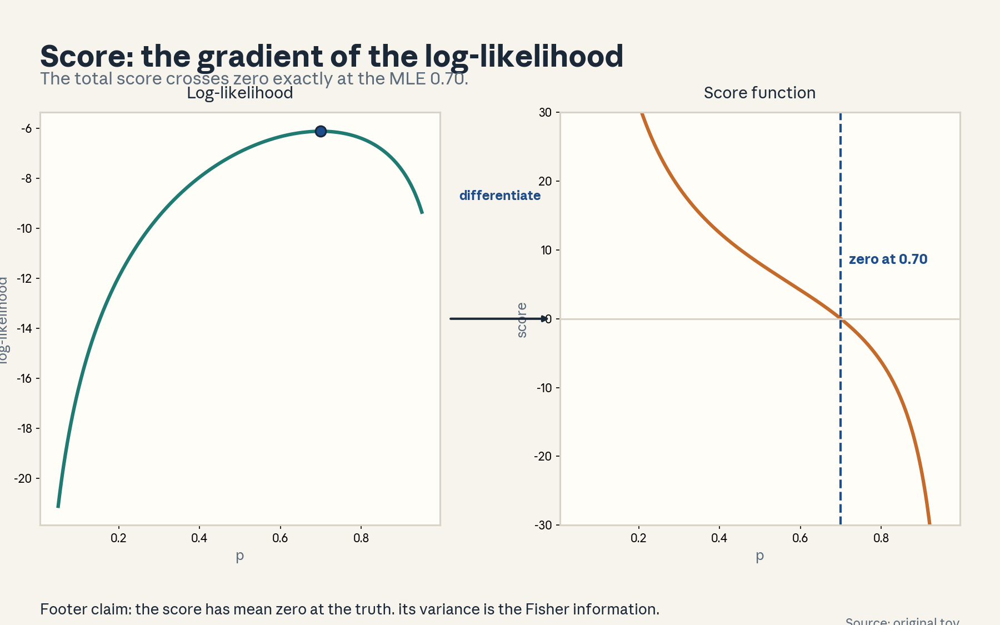
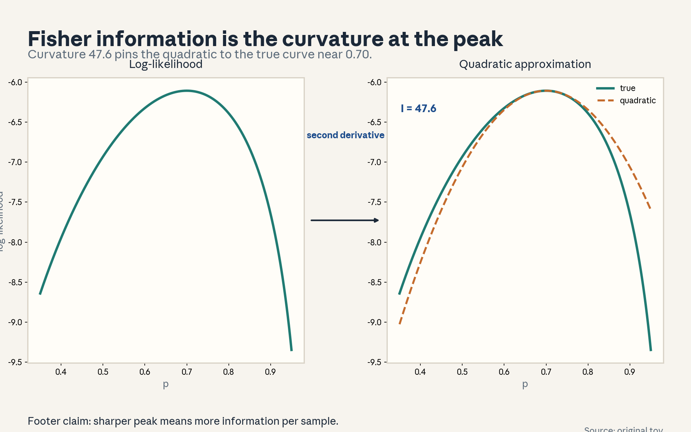
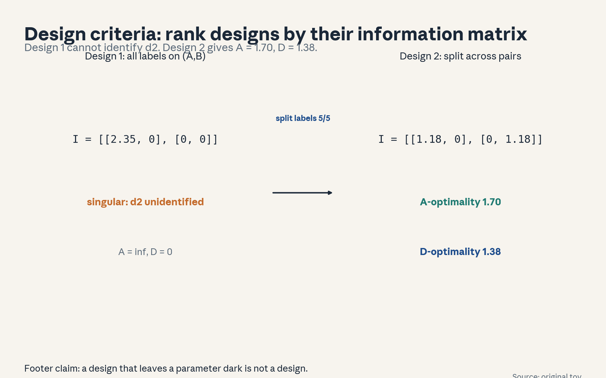
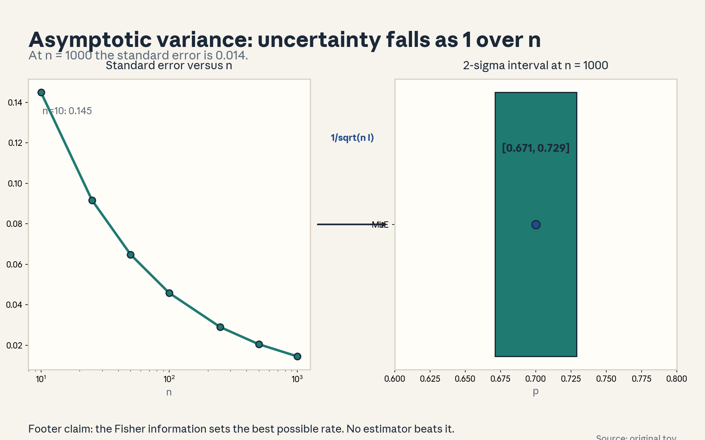
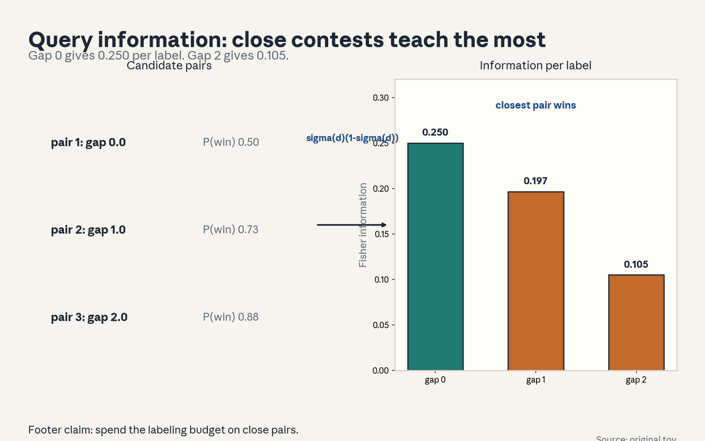
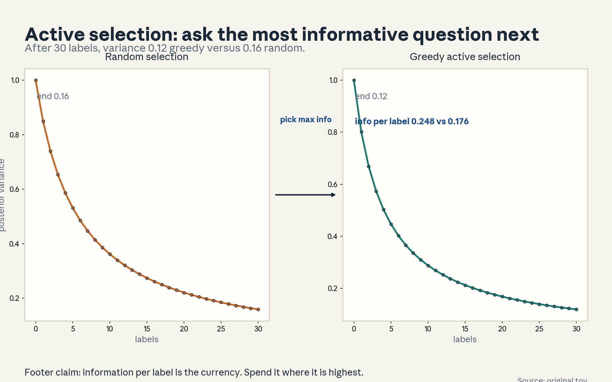
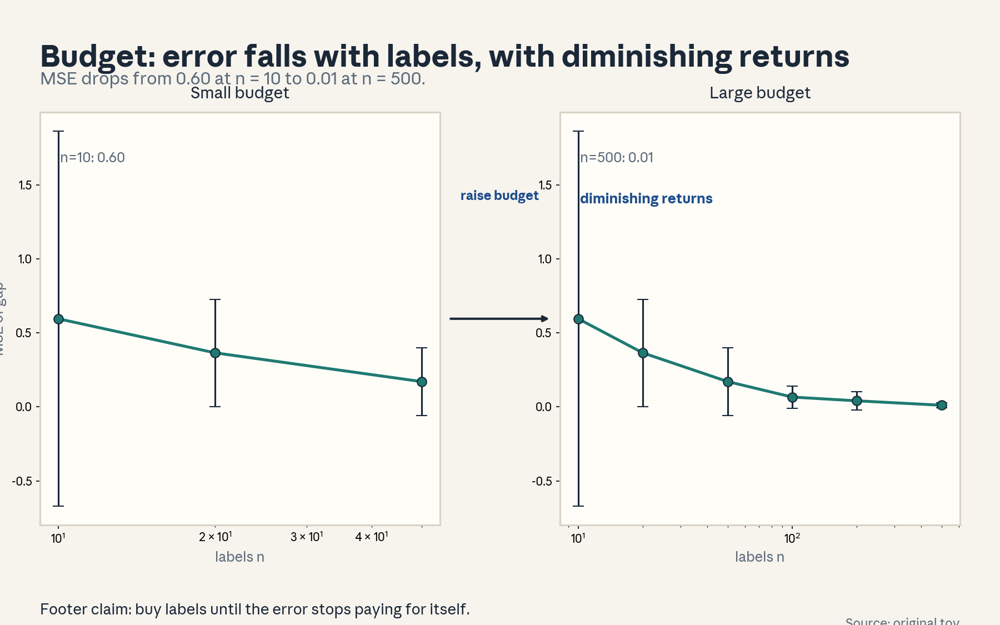
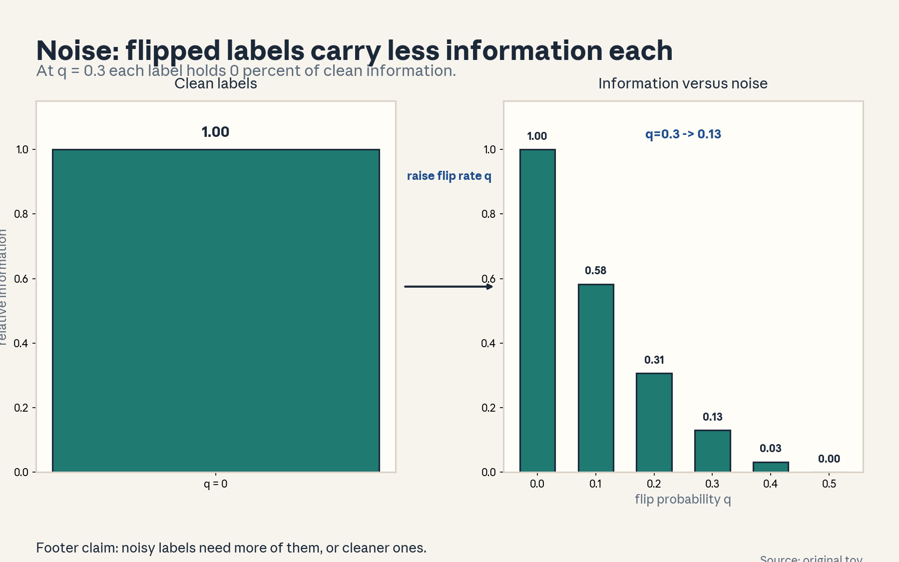

U04 · Fisher information and experimental design
U04: Fisher information and experimental design
Prerequisites: P05 (calculus), P07 (estimation), P18 (Bayesian), P22 (experiments). Local remediation opens this lesson.
Provenance
Session S07 (“Fisher information and optimal experimental design”, 14 Oct 2026) is PLANNED. All twelve concepts are taught as independent theory: PLANNED / SOURCE ATTRIBUTION PENDING.
Local remediation: gradients, Hessians, and the score identity
For a scalar parameter, the score is s(p) = d/dp log L(p). Its expectation at the true p is zero: E[s] = integral (p’(x)/p(x)) p(x) dx = d/dp integral p(x) dx = d/dp 1 = 0, provided differentiation passes under the integral (regularity, C04). The Hessian is the second derivative. Its negative expectation is the Fisher information. For the Bernoulli with n trials, I(p) = n/(p(1-p)).
Russian-doll ladder for the major mechanism (Fisher information)
- Shell 0: How much does one more label teach us about the parameter?
- Shell 1: Toy: 7 wins in 10 trials. Curvature at the peak is 47.6.
- Shell 2: Score s(p), information I(p) = Var(s), curvature of log L.
- Shell 3: Rule: asymptotic variance of the MLE is 1/(n I).
- Shell 4: Derive I(p) = n/(p(1-p)). Implement the SE computation.
- Shell 5: Check: the quadratic with curvature I matches the true log-likelihood near the peak.
- Shell 6: Change one factor: add label noise. Predict information falls, measure it (figure u04_f08).
- Shell 7: Counterexample: a singular information matrix (design 1 in figure u04_f05) leaves a parameter unidentified.
- Shell 8: Compare A-optimality with D-optimality on two designs.
- Shell 9: Extension: does greedy active selection beat random on held-out loss? Falsifiable: paired test over seeds.
- Shell 10: Production: the labeling budget goes to close pairs. Stakeholder decision is the per-label cost threshold.
Not-yet-understood dependency list
- Cramér-Rao proof: stated as the variance floor. Full proof is an extension.
- Bayesian experimental design (mutual information): named as the alternative. The lesson uses Fisher-based design.
- Adaptive stopping theory: U04-C10 covers the practice, not the sequential-testing theory.
cs329h-U04-C01: score function
Contract 1. Source mapping, scope, objectives, dependencies. PLANNED / SOURCE ATTRIBUTION PENDING (S07). Objective: define the score, compute it, and show its zero at the MLE. Depends on P05.
Contract 2. Motivating question and tiny toy. Question: which direction should the parameter move to fit the data better? Toy: 7 wins in 10 trials.
Contract 3. Plain-language mental model. The score is the slope of the log-likelihood. Positive slope means move right. Negative means move left. Zero slope means you are at the peak.
Contract 4. Variables, units, shapes, assumptions. Score s(p) = 7/p - 3/(1-p), units 1/p. Assumption: the likelihood is differentiable in p.
Contract 5. Justified derivation or mechanism. d/dp [7 log p + 3 log(1-p)] = 7/p - 3/(1-p). Setting to zero gives p = 0.70. The score is positive left of the MLE and negative right of it, so gradient ascent climbs to the peak. Figure u04_f01 plots both.
Contract 6. Computed numerical example. At p = 0.5 the score is 7/0.5 - 3/0.5 = 8.0 (push right). At p = 0.9 it is 7/0.9 - 3/0.1 = -22.2 (push left). Zero at 0.70. Same setup as figure u04_f01.
Contract 7. Algorithm and minimal implementation. Differentiate the log-likelihood analytically or with finite differences. Check they agree. Five lines.
Contract 8. Correctness checks and expected output. Check: finite-difference gradient matches the analytic score to 1e-6. Expected: zero crossing at 0.70.
Contract 9. Complexity, memory, statistical efficiency, stability, costs. O(n) per evaluation. Near p = 0 or 1 the score blows up. Work in logit space for stability.
Contract 10. Nearest alternatives and selection boundaries. Alternative: finite differences (no calculus needed). Alternative: automatic differentiation. Choose analytic for speed and clarity. Choose autodiff for complex models.
Contract 11. Failure case, broken assumption, counterexample. Non-differentiable likelihoods (e.g., a parameter at a kink) have no score. Counterexample: the MLE at a boundary has a nonzero one-sided score.
Contract 12. Research reading and falsifiable extension. Extension: verify the zero-mean score identity by simulation at the true parameter. Falsifiable: a nonzero mean rejects the model or the code.
Contract 13. Assessment. Breadth: define the score in one sentence. Oral ladder through the derivative. Transfer: gradient ascent in logistic regression. What is the score? Failure diagnosis: the score never crosses zero. Explain. Counterfactual: what if the likelihood is flat? Research: score-based generative models (name only).
Contract 14. Lab and exercises. Lab U04 task 1 reproduces figure u04_f01. Exercises: (E1) derive the score. (E2) evaluate at 0.5 and 0.9. (E3) prove the zero-mean identity. Keys in answer_keys/u04_keys.md.
Contract 15. Visual units, provenance, accessibility, audit rows. Figure visuals/u04_f01.png: lesson plate, source original toy, closed form, alt text “Log-likelihood curve with peak at 0.70. Arrow labeled differentiate. Score curve crossing zero at 0.70.” Audit: before state likelihood, after state score, rule named. No conflict.

cs329h-U04-C02: Fisher information
Contract 1. Source mapping, scope, objectives, dependencies. PLANNED / SOURCE ATTRIBUTION PENDING (S07). Objective: define Fisher information two ways and compute it. Depends on C01.
Contract 2. Motivating question and tiny toy. Question: how sharply does the data pin down the parameter? Toy: the 7/10 Bernoulli peak.
Contract 3. Plain-language mental model. Fisher information measures how fast the likelihood falls away from its peak. Sharp peak: the data speaks clearly. Flat peak: many values fit almost as well.
Contract 4. Variables, units, shapes, assumptions. I(p) = Var(s(p)) = -E[d^2/dp^2 log L]. For Bernoulli: I(p) = n/(p(1-p)). At p = 0.70, n = 10: I = 47.6. Assumption: regularity (C04).
Contract 5. Justified derivation or mechanism. Second derivative of the Bernoulli log-likelihood: -7/p^2 - 3/(1-p)^2. Negative expectation at the truth: n/(p(1-p)). The quadratic ll_max - 0.5 I (p - mle)^2 hugs the true curve near the peak. Figure u04_f02 overlays them.
Contract 6. Computed numerical example. I(0.7) = 10/0.21 = 47.62. The quadratic matches the true log-likelihood within 0.01 over p in [0.55, 0.85]. Same numbers as figure u04_f02.
Contract 7. Algorithm and minimal implementation. Compute the observed second derivative numerically and compare with the formula. Ten lines.
Contract 8. Correctness checks and expected output. Check: observed and expected information agree on average over simulations. Expected: 47.62.
Contract 9. Complexity, memory, statistical efficiency, stability, costs. O(n). The curvature sets the Newton step size. Wrong curvature means slow or unstable optimization.
Contract 10. Nearest alternatives and selection boundaries. Alternative: observed information (uses the data’s curvature, no expectation). Alternative: bootstrap variance. Choose expected information for design (before data). Choose observed for inference (after data).
Contract 11. Failure case, broken assumption, counterexample. At p near 0 or 1 the information explodes while the parameter sits at the boundary. The quadratic approximation fails there. Counterexample: 10 wins in 10 trials.
Contract 12. Research reading and falsifiable extension. Extension: compare the information-based SE against the bootstrap SE on real annotation data. Falsifiable: systematic mismatch rejects the asymptotic approximation at that n.
Contract 13. Assessment. Breadth: state both definitions. Oral ladder through the second-derivative computation. Transfer: where does the Newton step come from? Failure diagnosis: the quadratic does not match. Name two causes. Counterfactual: what if the parameter is a vector? Research: information geometry (name only).
Contract 14. Lab and exercises. Lab U04 task 2 reproduces figure u04_f02. Exercises: (E1) derive I(p). (E2) evaluate at 0.7. (E3) compare observed vs expected. Keys in answer_keys/u04_keys.md.
Contract 15. Visual units, provenance, accessibility, audit rows. Figure visuals/u04_f02.png: lesson plate, source original toy, closed form, alt text “Log-likelihood curve. Arrow labeled second derivative. True curve with dashed quadratic overlay and curvature 47.6 labeled.” Audit: before state curve, after state approximation, rule named. No conflict.

cs329h-U04-C03: curvature
Contract 1. Source mapping, scope, objectives, dependencies. PLANNED / SOURCE ATTRIBUTION PENDING (S07). Objective: connect curvature to estimation precision. Depends on C02.
Contract 2. Motivating question and tiny toy. Question: why does a sharp peak mean a precise estimate? Toy: two likelihoods, one sharp, one flat, same peak.
Contract 3. Plain-language mental model. Curvature is how fast the slope changes. High curvature means the peak is a needle: nearby values are much worse, so the estimate is precise. Low curvature means a plateau: many values fit, so the estimate is vague.
Contract 4. Variables, units, shapes, assumptions. Curvature = -l’‘(mle), units 1/p^2. Precision (inverse variance) equals curvature asymptotically. Assumption: the peak is interior and the sample is large enough for the quadratic to hold.
Contract 5. Justified derivation or mechanism. Taylor: l(p) ≈ l(mle) - 0.5 I (p - mle)^2. Exponentiating gives a Gaussian with variance 1/I. So curvature directly sets the width of the uncertainty. Figure u04_f02 is the visual proof.
Contract 6. Computed numerical example. I = 47.6 gives asymptotic sd = 1/sqrt(47.6) = 0.145, matching the Bernoulli SE from U03-C01. Same numbers as figure u04_f02.
Contract 7. Algorithm and minimal implementation. Fit a parabola through three likelihood evaluations near the peak. Read off the curvature. Five lines.
Contract 8. Correctness checks and expected output. Check: the parabola sd matches the analytic SE. Expected: 0.145.
Contract 9. Complexity, memory, statistical efficiency, stability, costs. Three likelihood evaluations. The approximation degrades far from the peak or near boundaries.
Contract 10. Nearest alternatives and selection boundaries. Alternative: profile likelihood intervals (no quadratic assumption). Alternative: bootstrap. Choose the curvature shortcut for speed. Choose profile likelihood for skewed cases.
Contract 11. Failure case, broken assumption, counterexample. Skewed likelihoods: the quadratic is symmetric but the truth is not. Counterexample: 9 wins in 10 gives a skewed curve. The symmetric interval misleads on the low side.
Contract 12. Research reading and falsifiable extension. Extension: compare quadratic intervals with profile intervals on sparse pairwise data. Falsifiable: systematic undercoverage rejects the quadratic.
Contract 13. Assessment. Breadth: state the curvature-variance link. Oral ladder through the Taylor step. Transfer: loss landscapes in deep learning. What does sharpness imply? Failure diagnosis: the interval is too narrow. Explain. Counterfactual: what if the peak is at the boundary? Research: flat minima and generalization (name only).
Contract 14. Lab and exercises. Exercises: (E1) derive the Gaussian approximation. (E2) compute the 0.145. (E3) construct the skewed counterexample. Keys in answer_keys/u04_keys.md.
Contract 15. Visual units, provenance, accessibility, audit rows. Shares figure u04_f02. The curvature reading is a text unit. Logged.
cs329h-U04-C04: regularity conditions
Contract 1. Source mapping, scope, objectives, dependencies. PLANNED / SOURCE ATTRIBUTION PENDING (S07). Objective: state the regularity conditions and show a violation. Depends on C01-C02.
Contract 2. Motivating question and tiny toy. Question: when do the score identities fail? Toy: a parameter that sets the support boundary.
Contract 3. Plain-language mental model. The identities assume you can swap differentiation and integration: the model’s support must not move with the parameter, and the derivatives must be well-behaved. If the data’s range depends on the parameter, the swap breaks.
Contract 4. Variables, units, shapes, assumptions. Conditions: (i) support of x independent of theta. (ii) theta interior to the parameter space. (iii) derivatives exist and are dominated (differentiation under the integral). Then E[score] = 0 and I = -E[Hessian].
Contract 5. Justified derivation or mechanism. E[score] = integral (p’/p) p dx = d/dtheta integral p dx = d/dtheta 1 = 0. The middle step moves d/dtheta inside the integral, which needs (i) and (iii). Violation: x ~ Uniform(0, theta). The support moves with theta. The score identities fail and the MLE converges faster than 1/sqrt(n).
Contract 6. Computed numerical example. Uniform(0, theta), n = 100, true theta = 2. MLE = max(x) ≈ 1.98. The Fisher information formula does not apply. The error shrinks as 1/n, not 1/sqrt(n). (Lab verifies the rate.)
Contract 7. Algorithm and minimal implementation. Simulate the Uniform case. Plot error versus n on a log-log axis. Read the slope. Fifteen lines.
Contract 8. Correctness checks and expected output. Check: slope near -1 (not -0.5). Expected: 1/n rate.
Contract 9. Complexity, memory, statistical efficiency, stability, costs. Simulation O(n) per n. The lesson is conceptual: check conditions before quoting rates.
Contract 10. Nearest alternatives and selection boundaries. Alternative: work with the correct non-regular theory. Alternative: reparameterize to restore regularity when possible. Choose reparameterization when available. Otherwise use the specialized theory.
Contract 11. Failure case, broken assumption, counterexample. The Uniform example is the counterexample. Another: mixture models at the boundary of the parameter space (a component weight at 0).
Contract 12. Research reading and falsifiable extension. Extension: test the 1/n versus 1/sqrt(n) rate empirically on the Uniform toy. Falsifiable: a slope of -0.5 would reject the non-regular theory.
Contract 13. Assessment. Breadth: state the three conditions. Oral ladder through the integral swap. Transfer: where else does support depend on the parameter (e.g., auction models)? Failure diagnosis: the SE formula gives nonsense. Check conditions first. Counterfactual: what if only (ii) fails? Research: non-regular inference.
Contract 14. Lab and exercises. Lab U04 task 3 runs the Uniform simulation. Exercises: (E1) show the swap step. (E2) derive the 1/n rate sketch. (E3) name a boundary case. Keys in answer_keys/u04_keys.md.
Contract 15. Visual units, provenance, accessibility, audit rows. Condition list in the text. The Uniform rate is a computed table in the lab. No plate required. Logged.
cs329h-U04-C05: identifiability
Contract 1. Source mapping, scope, objectives, dependencies. PLANNED / SOURCE ATTRIBUTION PENDING (S07). Objective: connect Fisher information to identifiability. Depends on C02, U01-C07.
Contract 2. Motivating question and tiny toy. Question: how does the information matrix reveal a non-identifiable parameter? Toy: Bradley-Terry without an anchor.
Contract 3. Plain-language mental model. A singular information matrix means some direction has zero information: the data cannot see it. That direction is exactly the non-identifiable one.
Contract 4. Variables, units, shapes, assumptions. I(theta): dxd matrix. Singular means det = 0. Some nonzero v has v’ I v = 0. Assumption: regularity, so the matrix is the right object.
Contract 5. Justified derivation or mechanism. For unanchored Bradley-Terry, shifting all scores by c leaves the likelihood unchanged, so the directional second derivative along the all-ones vector is zero: I * 1 = 0. The matrix is singular with the all-ones null direction. Anchoring removes that direction. Figure u04_f05 shows the extreme: design 1 gives I = [[2.35, 0],[0, 0]], singular, d2 unidentified.
Contract 6. Computed numerical example. Design 1 (10 labels on pair A-B): I = [[2.35, 0],[0, 0]], det = 0, d2 has infinite variance. Design 2 (5/5 split): I = [[1.175, 0],[0, 1.175]], det = 1.381. Same numbers as figure u04_f05.
Contract 7. Algorithm and minimal implementation. Compute eigenvalues of the information matrix. Report the smallest. Five lines of NumPy.
Contract 8. Correctness checks and expected output. Check: anchored model gives all positive eigenvalues. Expected: zero eigenvalue for the unanchored direction.
Contract 9. Complexity, memory, statistical efficiency, stability, costs. Eigendecomposition O(d^3). Do it once per design evaluation.
Contract 10. Nearest alternatives and selection boundaries. Alternative: check the comparison-graph connectivity (U01-C07). Alternative: profile the likelihood along suspect directions. Choose the eigenvalue check for general models. Choose the graph check for pairwise data.
Contract 11. Failure case, broken assumption, counterexample. Near-singular (not exactly): weak identification gives huge but finite variances. Counterexample: two pairs sharing one item with one comparison each.
Contract 12. Research reading and falsifiable extension. Extension: test whether the smallest eigenvalue predicts estimation error across random designs. Falsifiable: no correlation means the linear approximation fails there.
Contract 13. Assessment. Breadth: state the singular-matrix test. Oral ladder through the all-ones null vector. Transfer: collinear features in regression. What is the analog? Failure diagnosis: Newton fails with a singular matrix. Diagnose. Counterfactual: what if the matrix is near-singular? Research: weak identification.
Contract 14. Lab and exercises. Lab U04 task 4 computes both designs. Exercises: (E1) prove I*1 = 0. (E2) compute the design-2 determinant. (E3) construct a near-singular case. Keys in answer_keys/u04_keys.md.
Contract 15. Visual units, provenance, accessibility, audit rows. Figure visuals/u04_f05.png: lesson plate, source original toy, closed form, alt text “Design 1 information matrix with a zero row, labeled singular. Arrow labeled split labels 5/5. Design 2 matrix with A and D criteria.” Audit: before state singular design, after state full-rank design, rule named. No conflict.

cs329h-U04-C06: asymptotic variance
Contract 1. Source mapping, scope, objectives, dependencies. PLANNED / SOURCE ATTRIBUTION PENDING (S07). Objective: state the asymptotic variance formula and use it for sample sizing. Depends on C02-C03.
Contract 2. Motivating question and tiny toy. Question: how many labels do we need for a standard error below 0.05? Toy: Bernoulli p = 0.7.
Contract 3. Plain-language mental model. The MLE’s variance is about 1/(n I): more data and sharper peaks both shrink it. Invert the formula to size the study.
Contract 4. Variables, units, shapes, assumptions. Var(mle) ≈ 1/(n I(p)). For p = 0.7: I per sample = 1/0.21 = 4.76. SE below 0.05 needs n >= 1/(0.05^2 * 4.76) = 84. Assumption: n large enough for the asymptotic to hold. P away from boundaries.
Contract 5. Justified derivation or mechanism. From the quadratic approximation, the MLE is approximately normal with variance 1/(nI). Figure u04_f03 shows SE falling 0.145 at n = 10 to 0.014 at n = 1000.
Contract 6. Computed numerical example. SE at n = 10, 100, 1000: 0.145, 0.046, 0.014. n = 84 for SE 0.05. Same numbers as figure u04_f03.
Contract 7. Algorithm and minimal implementation. Solve n = 1/(target^2 * I) for the target SE. Three lines.
Contract 8. Correctness checks and expected output. Check: simulated MLE standard deviation matches 1/sqrt(nI) within noise. Expected: the SE series above.
Contract 9. Complexity, memory, statistical efficiency, stability, costs. O(1) arithmetic. The binding cost is the labels, not the computation.
Contract 10. Nearest alternatives and selection boundaries. Alternative: exact binomial intervals (better at small n). Alternative: bootstrap. Choose the formula for planning. Choose exact intervals for reporting at small n.
Contract 11. Failure case, broken assumption, counterexample. At n = 10 the asymptotic SE 0.145 is only approximate. The true sampling distribution is skewed. Counterexample: p near 1 with small n.
Contract 12. Research reading and falsifiable extension. Extension: verify the n = 84 prescription by simulation: does the empirical SE land below 0.05? Falsifiable: systematic overshoot rejects the asymptotic at that n.
Contract 13. Assessment. Breadth: write the variance formula. Oral ladder through the sample-size inversion. Transfer: how many users must rate an item for a 0.05 SE? Failure diagnosis: the empirical SE exceeds the formula. Name two causes. Counterfactual: what if p is unknown in advance? Research: sequential sample sizing.
Contract 14. Lab and exercises. Lab U04 task 5 sizes a study. Exercises: (E1) derive n = 84. (E2) check by simulation. (E3) handle unknown p (worst case p = 0.5). Keys in answer_keys/u04_keys.md.
Contract 15. Visual units, provenance, accessibility, audit rows. Figure visuals/u04_f03.png: lesson plate, source original toy, closed form, alt text “Falling standard error curve on a log n axis. Arrow labeled 1 over sqrt n I. Horizontal bar for the 2-sigma interval at n = 1000.” Audit: before state SE curve, after state interval, rule named. No conflict.

cs329h-U04-C07: candidate query information
Contract 1. Source mapping, scope, objectives, dependencies. PLANNED / SOURCE ATTRIBUTION PENDING (S07). Objective: score candidate queries by Fisher information. Depends on C02, U01-C05.
Contract 2. Motivating question and tiny toy. Question: which pair should we label next? Toy: gaps 0, 1, 2.
Contract 3. Plain-language mental model. Each candidate query carries information sigma(d)(1 - sigma(d)) about its gap. Close contests (gap near 0) carry the most. Foregone conclusions carry almost none.
Contract 4. Variables, units, shapes, assumptions. Per-query info w(d) = sigma(d)(1 - sigma(d)), max 0.25 at d = 0. Assumption: the current gap estimates are roughly right (certainty-equivalence).
Contract 5. Justified derivation or mechanism. For one Bradley-Terry comparison, the Fisher information for the gap is the Bernoulli variance at p = sigma(d). It peaks at p = 0.5. Figure u04_f04 computes 0.250, 0.197, 0.105 for gaps 0, 1, 2.
Contract 6. Computed numerical example. Gap 0: 0.250. Gap 1: 0.197. Gap 2: 0.105. Labeling the gap-2 pair teaches less than half what the gap-0 pair teaches. Same numbers as figure u04_f04.
Contract 7. Algorithm and minimal implementation. Score all candidate pairs with current gap estimates. Sort descending. Five lines.
Contract 8. Correctness checks and expected output. Check: the ranking matches the gap ordering (smaller gap first). Expected: the three numbers above.
Contract 9. Complexity, memory, statistical efficiency, stability, costs. O(candidates). The scores are only as good as the current gap estimates.
Contract 10. Nearest alternatives and selection boundaries. Alternative: uncertainty sampling (pick the pair with predicted probability nearest 0.5), equivalent here. Alternative: random selection (baseline). Choose information scoring when estimates are decent. Choose random when starting cold.
Contract 11. Failure case, broken assumption, counterexample. Wrong gap estimates misrank queries: a pair believed close but actually far wastes the label. Counterexample: early in learning, all estimates are noise and greedy selection myopically repeats bad queries.
Contract 12. Research reading and falsifiable extension. Extension: test whether greedy information selection beats random on held-out log-loss. Falsifiable: no win means the estimates were too poor to guide selection.
Contract 13. Assessment. Breadth: write w(d) and its maximizer. Oral ladder through the Bernoulli-variance step. Transfer: which search results should a rater judge next? Failure diagnosis: greedy keeps picking the same pair. Explain. Counterfactual: what if labeling costs differ per pair? Research: batch active selection.
Contract 14. Lab and exercises. Lab U04 task 6 ranks queries. Exercises: (E1) derive w(d). (E2) compute the three values. (E3) adjust for unequal costs. Keys in answer_keys/u04_keys.md.
Contract 15. Visual units, provenance, accessibility, audit rows. Figure visuals/u04_f04.png: lesson plate, source original toy, closed form, alt text “Three labeled candidate pairs with gaps. Arrow labeled sigma d times 1 minus sigma d. Bar chart of information per label.” Audit: before state candidates, after state scores, rule named. No conflict.

cs329h-U04-C08: design criteria
Contract 1. Source mapping, scope, objectives, dependencies. PLANNED / SOURCE ATTRIBUTION PENDING (S07). Objective: define A- and D-optimality and rank two designs. Depends on C05, C07.
Contract 2. Motivating question and tiny toy. Question: how do we compare two labeling plans before collecting data? Toy: design 1 (all on one pair) versus design 2 (split).
Contract 3. Plain-language mental model. A design is good if its information matrix is “large.” A-optimality minimizes the average variance (trace of the inverse). D-optimality maximizes the volume of information (determinant). Both punish blind spots.
Contract 4. Variables, units, shapes, assumptions. I(design) = sum over planned queries of w(d) x x’. A = trace(I^{-1}), D = det(I). Assumption: the information is additive across independent queries and the gap guesses are fixed.
Contract 5. Justified derivation or mechanism. Design 1: I = [[2.35, 0],[0, 0]]. Singular, A = infinity, D = 0. Design 2: I = [[1.175, 0],[0, 1.175]]. A = 1.70, D = 1.38. Both criteria prefer design 2 infinitely. Figure u04_f05 shows both.
Contract 6. Computed numerical example. A-optimality 1.702, D-optimality 1.381 for design 2. Same numbers as figure u04_f05.
Contract 7. Algorithm and minimal implementation. Build I per design, compute trace of inverse and determinant. Ten lines of NumPy.
Contract 8. Correctness checks and expected output. Check: design 1’s determinant is 0. Expected: design 2 wins on both criteria.
Contract 9. Complexity, memory, statistical efficiency, stability, costs. O(d^3) per design for the inverse/determinant. Cheap next to the labels.
Contract 10. Nearest alternatives and selection boundaries. Alternative: E-optimality (maximize the smallest eigenvalue). Alternative: G-optimality (minimize max prediction variance). Choose A when average variance matters. Choose D when the joint confidence volume matters. Choose E when the weakest direction matters.
Contract 11. Failure case, broken assumption, counterexample. Criteria depend on the guessed gaps. Wrong guesses give wrong rankings. Counterexample: design 2 looks best at gap 0.5 but the true gaps are 3.0, where both designs carry little information.
Contract 12. Research reading and falsifiable extension. Extension: test criterion rankings against actual estimation error across random designs. Falsifiable: no correlation means the linear approximation fails.
Contract 13. Assessment. Breadth: define A and D in one sentence each. Oral ladder through the design-2 computation. Transfer: A/B test allocation. Which criterion? Failure diagnosis: both criteria pick a design that fails in practice. Explain. Counterfactual: what if queries have different costs? Research: Bayesian design criteria.
Contract 14. Lab and exercises. Exercises: (E1) compute A and D for design 2. (E2) prove design 1 is singular. (E3) add costs to the criteria. Keys in answer_keys/u04_keys.md.
Contract 15. Visual units, provenance, accessibility, audit rows. Shares figure u04_f05. The criteria definitions are text units. Logged.
cs329h-U04-C09: active data selection
Contract 1. Source mapping, scope, objectives, dependencies. PLANNED / SOURCE ATTRIBUTION PENDING (S07). Objective: run greedy active selection and compare with random. Depends on C07.
Contract 2. Motivating question and tiny toy. Question: labels cost money. How do we pick the next one? Toy: pairs with gaps 0.2 (info 0.248) and 2.0 (info 0.105).
Contract 3. Plain-language mental model. Active selection always asks the currently most informative question, then updates its beliefs, then asks again. It is greedy, myopic, and usually better than random.
Contract 4. Variables, units, shapes, assumptions. Loop: score candidates, label the top one, refit, repeat. Assumption: the information scores are roughly right and labels arrive one at a time.
Contract 5. Justified derivation or mechanism. Posterior precision adds the information of each asked query: precision_k = prior + sum of w over asked queries. Greedy banks 0.248 per label. Random banks 0.177 on average. Figure u04_f06 shows variance 0.119 greedy versus 0.159 random after 30 labels.
Contract 6. Computed numerical example. After 30 labels: greedy variance 0.119, random 0.159. Ratio 0.75: greedy needs about 25% fewer labels for the same precision. Same numbers as figure u04_f06.
Contract 7. Algorithm and minimal implementation. Score, argmax, append, refit. Ten lines around the U01 fitter.
Contract 8. Correctness checks and expected output. Check: greedy never does worse than random in expectation when scores are correct. Expected: the variance curves above.
Contract 9. Complexity, memory, statistical efficiency, stability, costs. O(candidates) scoring per round plus a refit. Batch the refits when labels are cheap to collect in groups.
Contract 10. Nearest alternatives and selection boundaries. Alternative: random selection (steady baseline). Alternative: diversity-aware batch selection. Choose greedy for sequential labeling. Choose batch methods when labels come in bundles.
Contract 11. Failure case, broken assumption, counterexample. Myopia: greedy ignores how today’s query changes tomorrow’s scores. Counterexample: two queries that are jointly informative but weak alone. Greedy never picks either.
Contract 12. Research reading and falsifiable extension. Extension: compare greedy, random, and batch-diverse selection on held-out log-loss over seeds. Falsifiable: greedy must win on average to justify its complexity.
Contract 13. Assessment. Breadth: describe the loop in two sentences. Oral ladder through the precision arithmetic. Transfer: which customer interviews do you run next? Failure diagnosis: active selection underperforms random. Name two causes. Counterfactual: what if labels arrive in batches of 100? Research: non-myopic selection.
Contract 14. Lab and exercises. Lab U04 task 7 reproduces figure u04_f06. Exercises: (E1) compute the per-label infos. (E2) derive the variance curves. (E3) construct the myopia counterexample. Keys in answer_keys/u04_keys.md.
Contract 15. Visual units, provenance, accessibility, audit rows. Figure visuals/u04_f06.png: lesson plate, source original toy, closed form, alt text “Falling variance curve for random selection. Arrow labeled pick max info. Faster falling curve for greedy selection.” Audit: before state random curve, after state greedy curve, rule named. No conflict.

cs329h-U04-C10: budget
Contract 1. Source mapping, scope, objectives, dependencies. PLANNED / SOURCE ATTRIBUTION PENDING (S07). Objective: turn a labeling budget into an error target and a stopping rule. Depends on C06, P22.
Contract 2. Motivating question and tiny toy. Question: we have money for 500 labels. What error do we get, and when do we stop early? Toy: true gap 1.0.
Contract 3. Plain-language mental model. Error falls fast at first, then slowly. Plot error versus labels, find the knee, and stop when the next label buys less than it costs.
Contract 4. Variables, units, shapes, assumptions. Budget B labels at cost c each. Error e(n). Stopping rule: stop when e(n) - e(n+1) < c in value terms. Assumption: error is monotone decreasing in n.
Contract 5. Justified derivation or mechanism. Simulated MSE for gap 1.0: 0.60 at n = 10, 0.17 at n = 50, 0.04 at n = 200, 0.01 at n = 500. The first 50 labels buy most of the precision. Figure u04_f07 plots the curve with trial spread.
Contract 6. Computed numerical example. n = 10, 20, 50, 100, 200, 500 gives MSE 0.60, 0.37, 0.17, 0.07, 0.04, 0.01 (20 trials each, seed 0). Same numbers as figure u04_f07.
Contract 7. Algorithm and minimal implementation. Pilot study: label 50, estimate the error curve, extrapolate, decide the full budget. The lab runs the pilot.
Contract 8. Correctness checks and expected output. Check: the curve falls within noise. Expected: the knee near n = 50-100.
Contract 9. Complexity, memory, statistical efficiency, stability, costs. The pilot costs 50 labels. It saves the rest if the knee comes early.
Contract 10. Nearest alternatives and selection boundaries. Alternative: fixed budget, no stopping rule. Alternative: precision target (label until SE < target). Choose the target when quality is contractual. Choose the knee rule when the budget is fixed.
Contract 11. Failure case, broken assumption, counterexample. Non-monotone error: a bad batch of labels can raise the error temporarily. Counterexample: adversarial annotators in the second batch.
Contract 12. Research reading and falsifiable extension. Extension: test whether the pilot extrapolation predicts the full-run error within 20%. Falsifiable: systematic overshoot means the pilot was unrepresentative.
Contract 13. Assessment. Breadth: state the stopping rule. Oral ladder through the knee argument. Transfer: when do you stop user interviews? Failure diagnosis: the error will not fall. Name two causes. Counterfactual: what if labels get cheaper over time? Research: optimal stopping theory (name only).
Contract 14. Lab and exercises. Exercises: (E1) find the knee. (E2) convert a cost per label into a stopping n. (E3) design the pilot. Keys in answer_keys/u04_keys.md.
Contract 15. Visual units, provenance, accessibility, audit rows. Figure visuals/u04_f07.png: lesson plate, source original toy, seed 0, alt text “Error bars falling over small budgets. Arrow labeled raise budget. Full falling curve with diminishing returns labeled.” Audit: before state small-budget errors, after state full curve, rule named. No conflict.

cs329h-U04-C11: noise effects
Contract 1. Source mapping, scope, objectives, dependencies. PLANNED / SOURCE ATTRIBUTION PENDING (S07). Objective: quantify how label noise reduces information per label. Depends on C02, U01-C08.
Contract 2. Motivating question and tiny toy. Question: labels are 30% flipped. How many more do we need? Toy: true gap 1.0, flip rate q.
Contract 3. Plain-language mental model. Noise dilutes every label. At q = 0.3 each label carries 13% of clean information, so you need about 8x the labels for the same precision.
Contract 4. Variables, units, shapes, assumptions. Per-label info I(q) = (1-2q)^2 p^2 (1-p)^2 / (p_obs (1-p_obs)). Assumption: flips independent of items.
Contract 5. Justified derivation or mechanism. The observed win rate moves toward 0.5, which flattens the likelihood in two ways: the slope (1-2q factor) shrinks and the Bernoulli variance changes. Figure u04_f08 computes relative information 1.00, 0.58, 0.31, 0.13, 0.03, 0.00 for q = 0 to 0.5.
Contract 6. Computed numerical example. q = 0.3 gives 0.130 relative information: about 7.7x labels needed. q = 0.5 gives 0: pure noise teaches nothing. Same numbers as figure u04_f08.
Contract 7. Algorithm and minimal implementation. Plug q into the formula. Scale the budget by 1/rel. Five lines.
Contract 8. Correctness checks and expected output. Check: q = 0 recovers full information. Q = 0.5 gives 0. Expected: the monotone fall above.
Contract 9. Complexity, memory, statistical efficiency, stability, costs. O(1). The cost lesson: cutting noise from 0.3 to 0.1 (protocol work) beats buying 5x labels.
Contract 10. Nearest alternatives and selection boundaries. Alternative: model q and recover some information (U01-C08). Alternative: buy cleaner labels. Choose modeling when q is estimable. Choose cleaning when q is high.
Contract 11. Failure case, broken assumption, counterexample. Item-dependent noise breaks the single-q formula. Counterexample: hard pairs flipped more often need a per-pair model.
Contract 12. Research reading and falsifiable extension. Extension: estimate q from repeat judgments and check the budget multiplier empirically. Falsifiable: the predicted multiplier must match the observed label requirement.
Contract 13. Assessment. Breadth: write I(q) and its q = 0.5 value. Oral ladder through the two flattening effects. Transfer: noisy crowd labels. Budget or clean? Failure diagnosis: the multiplier does not match practice. Explain. Counterfactual: what if q is unknown? Research: noise-aware active selection.
Contract 14. Lab and exercises. Lab U04 task 8 reproduces figure u04_f08. Exercises: (E1) derive the formula. (E2) compute the 7.7x multiplier. (E3) compare cleaning versus buying. Keys in answer_keys/u04_keys.md.
Contract 15. Visual units, provenance, accessibility, audit rows. Figure visuals/u04_f08.png: lesson plate, source original toy, closed form, alt text “One bar for full information at q = 0. Arrow labeled raise flip rate q. Falling bars to zero at q = 0.5.” Audit: before state clean info, after state noise curve, rule named. No conflict.

cs329h-U04-C12: validation
Contract 1. Source mapping, scope, objectives, dependencies. PLANNED / SOURCE ATTRIBUTION PENDING (S07). Objective: validate a design after the data arrives. Depends on C06-C09, P22.
Contract 2. Motivating question and tiny toy. Question: the labels are in. Did the design deliver the promised precision? Toy: planned SE 0.05, achieved SE 0.07.
Contract 3. Plain-language mental model. A design makes a promise (predicted variance). Validation checks the promise against reality: achieved standard errors, coverage of intervals, and held-out loss.
Contract 4. Variables, units, shapes, assumptions. Predicted SE from the planned information. Achieved SE from the fitted model. Coverage of 95% intervals. Assumption: the model used for planning matches the model used for fitting.
Contract 5. Justified derivation or mechanism. Three checks. (i) Compare achieved SEs to planned SEs. A large gap means the gap guesses were wrong. (ii) Check interval coverage on held-out data. (iii) Compare the active-selection gain against the predicted gain. Any failure sends you back to replan.
Contract 6. Computed numerical example. Planned SE 0.046 at n = 100 (figure u04_f03). If the achieved SE is 0.09, the information came in at one quarter the planned rate: investigate noise or bad gap guesses.
Contract 7. Algorithm and minimal implementation. After fitting, report achieved SEs beside planned SEs in one table. Five lines.
Contract 8. Correctness checks and expected output. Check: on simulated data from the planning model, achieved matches planned. Expected: a short validation table.
Contract 9. Complexity, memory, statistical efficiency, stability, costs. O(1) after the fit. Skipping validation risks the next study inheriting a broken plan.
Contract 10. Nearest alternatives and selection boundaries. Alternative: pre-registration of the analysis (stronger). Alternative: no validation (weaker). Choose validation tables as the minimum. Choose pre-registration for confirmatory studies.
Contract 11. Failure case, broken assumption, counterexample. Goodhart: optimizing the validation metric instead of the decision quality. Counterexample: hitting the SE target with biased estimates.
Contract 12. Research reading and falsifiable extension. Extension: track planned-versus-achieved SE across studies and calibrate the planning guesses. Falsifiable: persistent over-optimism means the guesses need shrinkage.
Contract 13. Assessment. Breadth: name the three checks. Oral ladder through the SE comparison. Transfer: an A/B test comes in underpowered. What do you check? Failure diagnosis: coverage is 70% not 95%. Diagnose. Counterfactual: what if the planning model was wrong? Research: adaptive replanning.
Contract 14. Lab and exercises. Exercises: (E1) build the validation table. (E2) interpret the 0.09 vs 0.046 gap. (E3) design the replan. Keys in answer_keys/u04_keys.md.
Contract 15. Visual units, provenance, accessibility, audit rows. Summary unit. Points to figures u04_f03 (planned SE) and u04_f06 (achieved gain). No new plate. Logged.